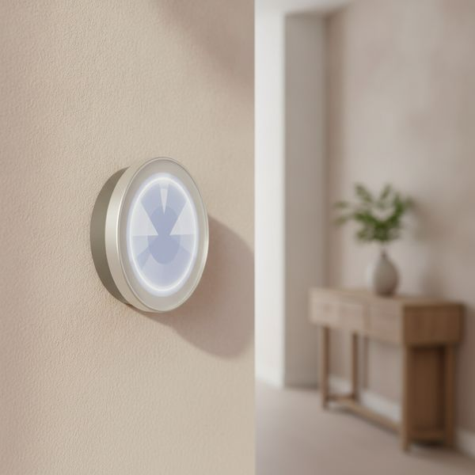
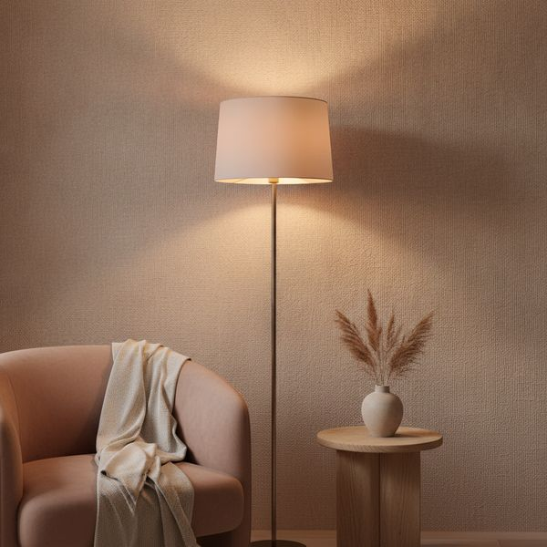
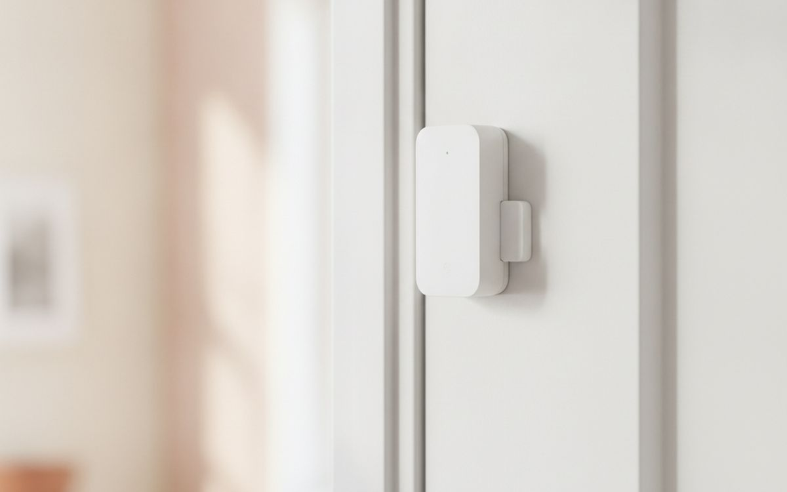
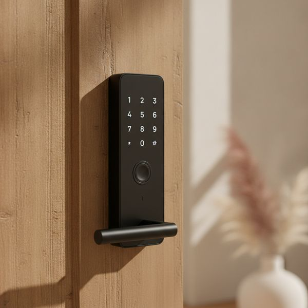
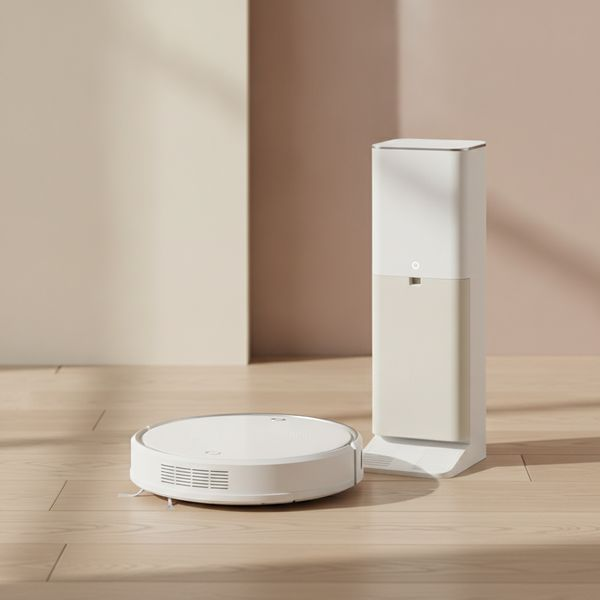
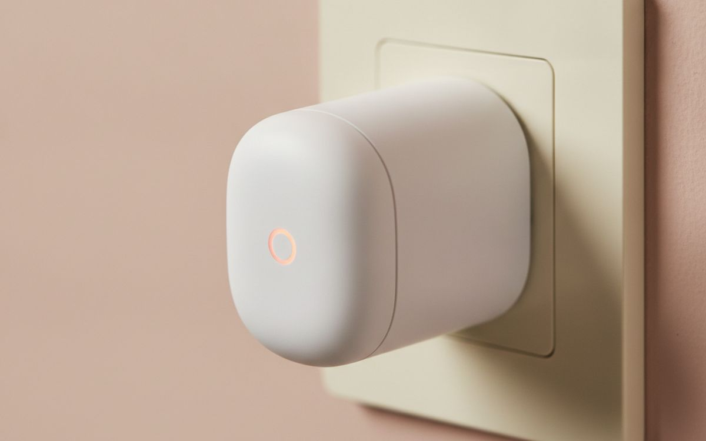
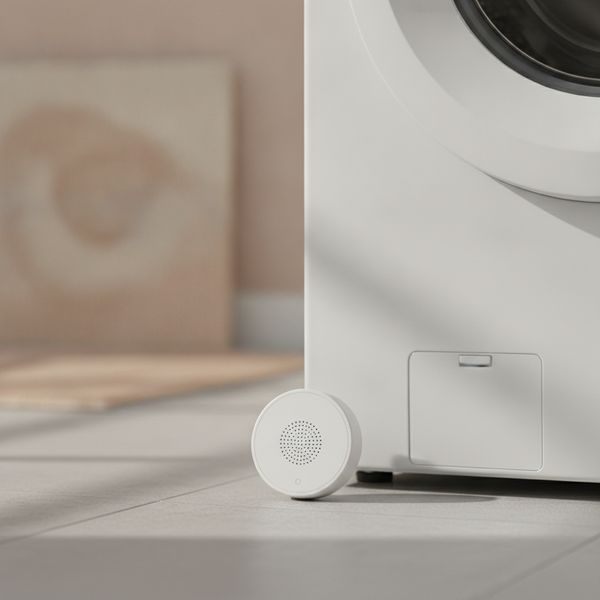
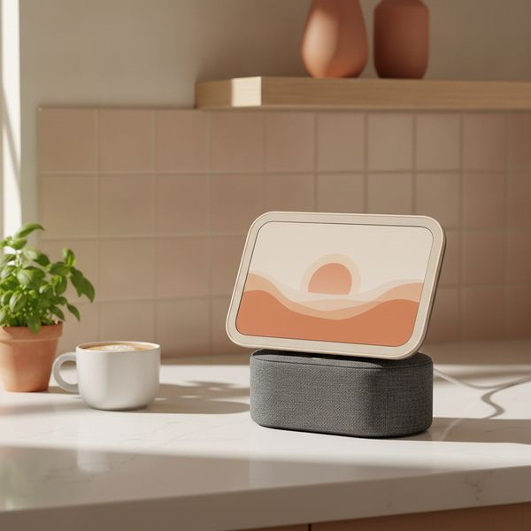
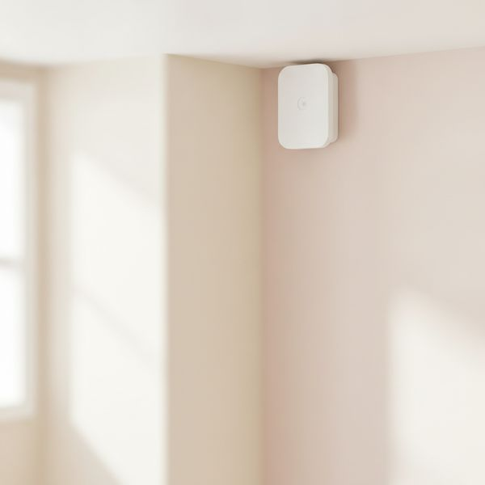
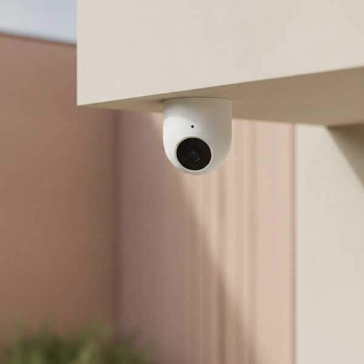

רוב הציוד לבית חכם פותר בעיה שלא הייתה לכם. העשרה האלה פותרים בעיות אמיתיות — ואנחנו אומרים בפירוש על מה היינו מוותרים.
לבית החכם יש בעיית אמינות, והוא הרוויח אותה ביושר. במשך עשור ההבטחה הייתה שתדברו עם התאורה, והמציאות הייתה אפליקציה לכל שקע, האב שהפסיקו לתמוך בו, ומפסק תאורה שהאורחים שלכם לא הצליחו להפעיל.
מה שהשתנה זה Matter ו-Thread — תקן משותף שסוף סוף מאפשר למכשירים ממותגים שונים לדבר זה עם זה בלי ערימה של גשרים. הוא לא מושלם, אבל הוא אומר שלרכישה שנעשית היום יש סיכוי סביר לעבוד גם בעוד חמש שנים, וזה לא היה נכון קודם.
לכן המבחן כאן פשוט: האם זה חוסך זמן אמיתי או כסף אמיתי, והאם זה ישרוד את זה שהיצרן יאבד עניין. איפה שקטגוריה נכשלת במבחן הזה אנחנו אומרים את זה במקום למלא את המקום.
המחירים הם הערכה נכון לזמן הכתיבה והם זזים הרבה במבצעים.
גילוי נאות. הקישורים בעמוד הזה הם קישורי שותפים. אם תקנו דרכם אנחנו עשויים להרוויח עמלה, בלי תוספת עלות לכם. זה לא משפיע על מה שנכנס לרשימה או על הסדר שלו.
איך בחרנו
אנחנו מעדיפים מכשירים שמדברים Matter או Thread על פני כאלה שנעולים לענן של מותג יחיד, כי סגירת שירותי ענן היא הדרך העיקרית שבה ציוד לבית חכם מת. אנחנו נותנים משקל רב לדיווחים של בעלים לאורך זמן ולהיסטוריית התמיכה של היצרן. לא התקנו בעצמנו כל מוצר כאן, ואיפה שקטגוריה באמת עוד לא שווה את הכסף אנחנו משמיטים אותה ומסבירים למה בשאלות שבסוף.
השוואה מהירה
המחירים הם הערכה נכון לזמן הכתיבה ומשתנים לעיתים קרובות.
הבחירות

1
זה שמחזיר את עצמותרמוסטט חכם Ecobee או Nest
$130–250
חימום וקירור הם סעיף האנרגיה הגדול ביותר ברוב הבתים, ולכן התרמוסטט הוא המכשיר החכם היחיד עם טיעון החזר השקעה אמין. החיסכון לא מגיע מזה שמדברים אליו — הוא מגיע מלוח הזמנים ומחיישנים מרוחקים שמונעים מהמערכת לחמם חדר ריק בזמן שהחדר המאויש נשאר קר. אקובי מגיעה עם החיישנים האלה בקופסה, וזה היתרון המעשי מול נסט. שתי מגבלות כנות: אם הבית שלכם קטן ובאזור אחד החיסכון צנוע, ואם אתם שוכרים, בדקו אם בכלל מותר לכם להחליף את היחידה.
בעד
- חיסכון אמיתי ומדיד באנרגיה
- חיישנים מרוחקים פותרים בעיות של חימום לא אחיד
- שליטה מהנייד כשתוכניות משתנות
נגד
- החזר השקעה צנוע בבתים קטנים עם אזור חימום יחיד
- עשוי לדרוש חיווט מקצועי ואישור מבעל הבית

2
התאורה הטובה ביותר, במחירערכת פתיחה Philips Hue (גשר ונורות)
$130–200
היו היא האופציה היקרה והיא עדיין זו שכדאי לקנות, כי בתאורה האמינות היא הדבר הכי חשוב — נורה שלוקח לה שתי שניות להגיב, או שנתקעת פעם בשבוע, גרועה יותר ממפסק רגיל. הגשר הוא מה שקונה את האמינות הזאת: הוא מפעיל את התאורה מקומית דרך Zigbee במקום לנתב כל פקודה דרך האינטרנט. איפה שהערך האמיתי מתגלה זה בתזמון, לא בצבע. תאורה שמתחממת בערב ועולה בהדרגה בבוקר משנה את התחושה בחדר הרבה יותר מכל סצנת מסיבה.
בעד
- מהיר ואמין — מגיב כמו מתג רגיל
- שליטה מקומית, עובד גם כשהאינטרנט נופל
- מגוון עצום של תבריגים וצורות
נגד
- יקר משמעותית מנורות מתחרות
- המגשר הוא עוד קופסה שצריך למצוא לה שקע

3
הדבר הזול שהופך את כל השאר לשימושיחיישני דלת וחלון Aqara או Eve
$15–30 each
אוטומציות טובות בדיוק כמו מה שהבית יודע על עצמו, וחיישני מגע הם הדרך הזולה ביותר לתת לו עובדות שימושיות. חיישן דלת הוא מה שמדליק את אור הכניסה כשאתם נכנסים, מודיע לכם שדלת האחורית פתוחה כבר עשרים דקות בחורף, ומזהיר אתכם שהמוסך לא נסגר. שום דבר מזה לא דורש מצלמה או מנוי. קנו גרסאות Thread או Zigbee ולא Wi-Fi — חיישני Wi-Fi טורפים סוללות ומעמיסים על הרשת, ואתם עלולים בסוף להחזיק תריסר כאלה.
בעד
- זולים מאוד, והם הבסיס לכל השאר
- סוללות שמחזיקות שנה ויותר בפרוטוקול Thread או Zigbee
- בלי מצלמה, בלי מנוי, בלי פגיעה בפרטיות
נגד
- חסרי תועלת בפני עצמם — צריכים משהו להפעיל
- ההדבקה עלולה להיכשל על משטחים עם טקסטורה

4
הנוחות היומיומית הגדולה ביותרמנעול חכם Aqara U100 או Yale Assure Lock 2
$180–300
המנעול החכם הוא המכשיר שאנשים הכי סקפטיים לגביו ובסוף הכי משתמשים בו, כי הוא מסיר חיכוך קטן שקורה כמה פעמים ביום. לתת למנקה או לאורח קוד זמני במקום לשכפל מפתח זה הפיצ'ר שמשכנע אנשים. עמדו על שני דברים: אפשרות פתיחה במפתח פיזי, וסוללות AA רגילות ולא מארז ייעודי. בדקו את הדלת שלכם לפני הקנייה — המנעולים האלה מתאימים לבריח סטנדרטי, ומנעולים רב-בריחיים אירופיים או פרזול דלתות ישראלי לא שגרתי דורשים לעיתים קרובות דגם אחר לגמרי, אז תמדדו קודם.
בעד
- קודים זמניים במקום מפתחות רזרביים
- נעילה אוטומטית מסירה דאגה אחת מהראש
- המפתח הפיזי עדיין עובד כגיבוי
נגד
- ההתאמה ממש לא אוניברסלית — מדדו את הדלת שלכם
- אם הסוללה נגמרת, אתם ננעלים בחוץ, אלא אם יש עליכם מפתח

5
הכי הרבה זמן שנחסך לכל שקלשואב רובוטי Roborock או Dreame עם ריקון עצמי
$400–900
זה המכשיר שקונה בחזרה הכי הרבה זמן, בתנאי שקונים את הרמה הנכונה. שני הפיצ'רים שמשנים הם מיפוי לידאר, כדי שהוא ינקה בשורות ולא יקפץ אקראית, ותחנת ריקון עצמי, כדי שתטפלו באבק פעם בכמה שבועות ולא כל יום. מתחת לבערך 1,500 ש"ח בדרך כלל מוותרים על אחד מהם או על שניהם וההתלהבות דועכת מהר. תהיו מציאותיים לגבי מה זה מחליף: הוא מטפל יפה בתחזוקה יומיומית ולא מחליף ניקיון יסודי. הוא גם דורש רצפה מסודרת, כך שהוא אוכף בשקט הרגל — ויש מי שסופר את זה כיתרון.
בעד
- באמת חוסך שעות בכל חודש
- מיפוי Lidar מבטיח כיסוי שיטתי ומלא
- עמדת הריקון העצמי מפחיתה את המגע עם אבק
נגד
- דגמים זולים הם חיסכון שיעלה ביוקר
- לא מתמודד עם בלגן, כבלים או ניקיון יסודי

6
נקודת ההתחלה הטובה ביותרשקעים חכמים Eve Energy או TP-Link Tapo
$15–40 each
שקע חכם הוא הדרך הזולה ביותר לגלות אם אתם בכלל רוצים בית חכם. הוא הופך מנורה, מאוורר או תנור רגילים לניתנים לתזמון, והדגמים עם ניטור צריכה עונים על שאלה שרוב האנשים רק מנחשים לגביה — איזה מכשיר עולה לכם הכי הרבה בשקט. המדידה הזאת שווה לעיתים קרובות יותר מהאוטומציה. קנו שקעים תואמי Matter כדי שיעבדו עם כל עוזר קולי שתבחרו בסוף, והימנעו מדגמים בלי מותג: זה מכשיר שנושא זרם רשת וחי בקיר שלכם שנים.
בעד
- הדרך הכי זולה לבדוק את כל הרעיון
- ניטור צריכת חשמל מאתר מכשירים זוללי אנרגיה
- מאפשר לתזמן הפעלה של מכשירים ״טיפשים״ קיימים
נגד
- הגדולים והמגושמים חוסמים את השקע השני
- זה לא המקום לחסוך בו על מותג לא מוכר

7
הביטוח הכי טוב ביחס למחירחיישן נזילת מים Aqara
$15–25 each
דיסקית של שבעים שקל מתחת למכונת הכביסה, לדוד ולכיור היא הפריט עם ההחזר הגבוה ביותר לשקל בעמוד הזה, ואף אחד לא קונה אותה עד אחרי ההצפה הראשונה. נזקי מים הם איטיים, יקרים ובדרך כלל מתגלים מאוחר מדי — מאחורי מכשיר, לתוך רצפה, דרך תקרה. החיישנים האלה שוכבים שטוח, עובדים שנה-שנתיים על סוללת כפתור, וצורחים ושולחים התראה לטלפון ברגע שהם נרטבים. אין עלות שוטפת ואין מה לתחזק. אם אתם קונים דבר אחד מהרשימה, וגם אם מעולם לא הייתה לכם נזילה, קנו דווקא את זה.
בעד
- זול באופן מגוחך ביחס לנזק שהוא מונע
- חיי סוללה ארוכים, אפס תחזוקה
- האזעקה המקומית עובדת גם בלי האפליקציה
נגד
- מכסה רק את הנקודה המדויקת שבה הוא מונח
- דורש רכזת (hub) או נתב גבול של Thread כדי לקבל התראות לטלפון

8
האב הטוב ביותר, עם הסתייגויותEcho Show 8 או Nest Hub
$90–150
מסך חכם מצדיק את מקומו במטבח, איפה שהידיים תפוסות וטיימר, מתכון והזנת מצלמה על מסך אחד באמת עוזרים. הרבה מהיחידות האלה גם מתפקדות כנתב גבול Thread או כאב Zigbee, וזה חוסך לכם בשקט קניית גשר נפרד. אבל ההסתייגות אמיתית: זה מיקרופון ומצלמה בחדר שאתם חיים בו, שנמכרים ברווח נמוך כי מודל העסק נמצא במקום אחר. אם העסקה הזאת מפריעה לכם, כסו את המצלמה, השתיקו את המיקרופון כשאינו בשימוש, או קנו אב בלי מסך במקום — זו בחירה לגיטימית ולא פרנויה.
בעד
- שימושי באמת במטבח
- לרוב משמש גם כרכזת (hub) של Thread או Zigbee
- זול, ולעיתים קרובות נמכר בהנחה
נגד
- מצלמה ומיקרופון שתמיד פועל בסלון שלכם
- פרסומות והצעות שדרוג על מסך הבית

9
השדרוג על פני חיישני תנועהחיישן נוכחות Aqara FP2
$70–90
הסיבה שתאורה חכמה מעצבנת אנשים היא שחיישני תנועה מזהים תנועה ולא נוכחות — ולכן האור נכבה בזמן שאתם קוראים, יושבים בשקט או באמבטיה. חיישני נוכחות בגלי מילימטר מזהים נשימה ותנועות מיקרו, כך שהם יודעים שהחדר מאויש גם כשכלום לא זז. ההבחנה הבודדת הזאת היא מה שגורם לתאורה אוטומטית להפסיק להיות מרגיזה. הוא יקר יותר מחיישן תנועה ודורש חשמל קבוע ומיקום התקנה מדויק, אז תתייחסו אליו כפתרון לחדר או שניים שבהם התאורה כל הזמן מכזיבה, ולא כמשהו להתקין בכל מקום.
בעד
- מזהה נוכחות, לא רק תנועה
- פותר את בעיית ה״אורות שכבו עליי״
- מאפשר להגדיר אזורים נפרדים בתוך אותו חדר
נגד
- דורש חיבור לחשמל ומיקום קפדני
- עולה פי כמה מחיישן תנועה רגיל

10
מצלמת האבטחה הטובה ביותר בלי מנוימצלמת אבטחה Eufy או Reolink עם אחסון מקומי
$60–200
רוב מצלמות האבטחה נמכרות בזול ומניבות כסף דרך מנוי חודשי, ואם תפסיקו לשלם לעיתים קרובות תאבדו את ההקלטה לגמרי. מצלמות שמקליטות לכרטיס מקומי או לתחנת בסיס נמנעות מזה, כך שהצילומים שלכם ואין חשבון חוזר. חפשו הקלטה מקומית, זיהוי אנשים על המכשיר עצמו כדי שלא תקבלו התראה מכל חתול שעובר, ותמיכת RTSP אם תרצו להריץ מקליט משלכם. כוונו אותן לכניסות ולשטחים חיצוניים ולא לתוך אזורי המגורים, ובדקו את הכללים במקום מגוריכם — להקליט כניסה משותפת או רכוש של שכן מוגבל משפטית ברוב המקומות.
בעד
- בלי דמי מנוי חודשיים, והצילומים נשארים אצלכם
- זיהוי על המכשיר עצמו מצמצם התראות שווא
- ממשיכה לעבוד גם אם שירותי הענן של היצרן קורסים
נגד
- עלות ראשונית גבוהה יותר מדגמים מבוססי מנוי
- יש מגבלות חוקיות על מה מותר לצלם — בדקו את החוקים המקומיים
שאלות נפוצות
מה זה Matter, וכדאי לי בכלל להתעניין?
זה תקן משותף שמאפשר למכשירים ממותגים שונים לעבוד יחד ולהיות מנוהלים על ידי כל עוזר קולי מרכזי. כדאי להתעניין בעיקר כי זה מגן עליכם מלהיכנס למותג שיסגור אחר כך את השרתים שלו.
על איזה ציוד לבית חכם הייתם מוותרים?
מקררים חכמים, מיקרוגלים חכמים ורוב הברזים החכמים — התוספת החכמה מוסיפה עלות ונקודות כשל למכשיר שמחזיקים חמש-עשרה שנה. וגם תריסים חכמים, אלא אם יש לכם בעיית שמש או נגישות ספציפית, בהתחשב בעלות ההתקנה.
האם משהו מזה ימשיך לעבוד אם האינטרנט ייפול?
מכשירים על Zigbee, Thread או אב מקומי ברובם ימשיכו לעבוד, כולל לוחות זמנים. כל דבר שתלוי בענן של היצרן בדרך כלל ייעצר. זו הסיבה הכי טובה להעדיף שליטה מקומית כשיש לכם ברירה.
אני שוכר. מה אפשר להתקין?
שקעים, נורות, חיישנים ושואב רובוטי — כולם מותקנים בלי לשנות שום דבר קבוע. תרמוסטטים ומנעולים בדרך כלל דורשים אישור, אם כי חלק מהמנעולים מחליפים רק את הצד הפנימי ומשאירים את הצילינדר והמפתח הקיימים.
← כל המדריכים
הגשנו בקשה להצטרף לתוכנית השותפים של אמזון. איננו שותפים של אמזון עדיין, ואיננו מרוויחים דבר מקישורים לאמזון בשלב זה. כשותפים של עליאקספרס אנחנו מרוויחים עמלה מרכישות מזכות. המחירים והזמינות נכונים לזמן הפרסום ועשויים להשתנות.